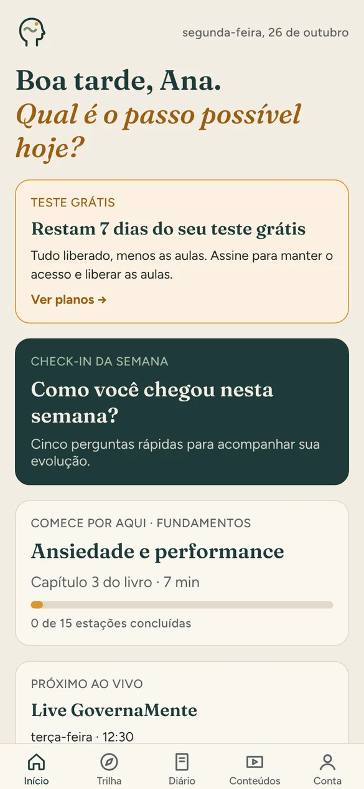
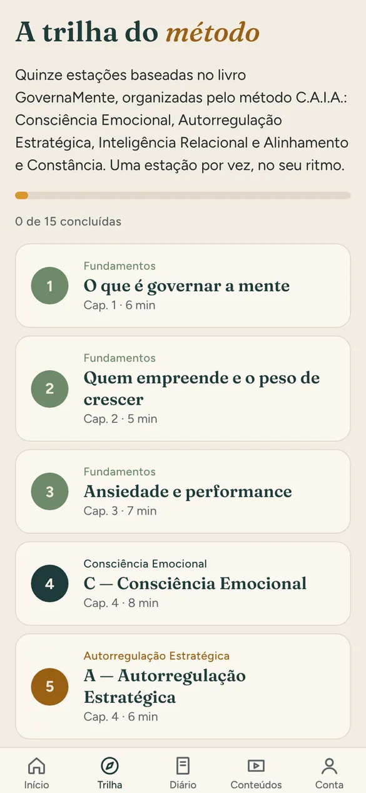
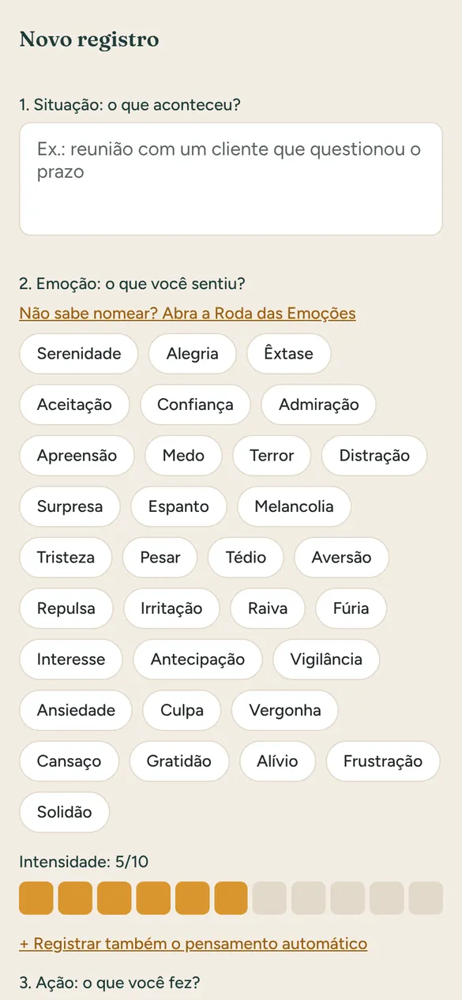
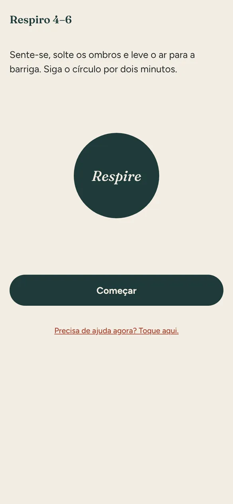
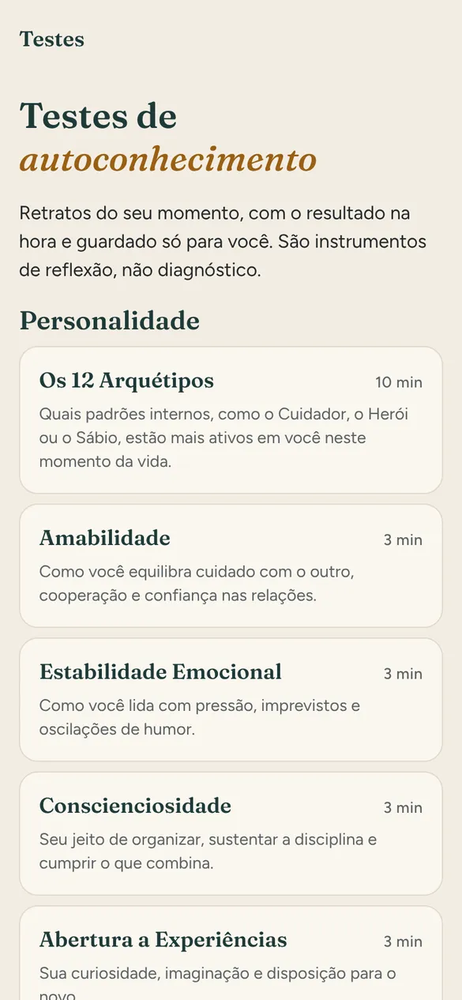
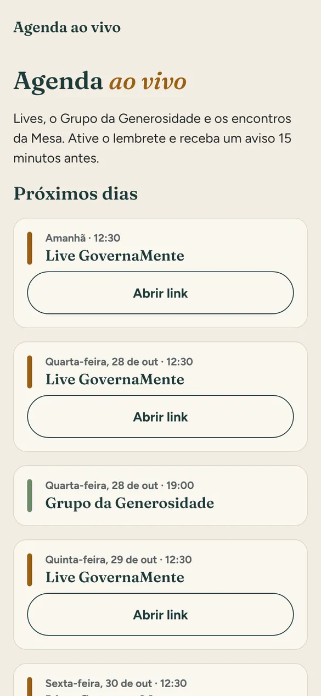

App de autorregulação emocional: o método do livro GovernaMente no seu bolso
Um passo possível por dia para perceber o que você sente, regular a intensidade e agir pelos seus valores, e não pelo impulso. Feito para quem empreende, lidera e carrega muita responsabilidade.
Começar meus 7 dias grátisVer o que tem dentro
- Sem cartão
- Tudo liberado por 7 dias
- Seus registros ficam só com você

Como funciona o teste grátis
Você experimenta o app inteiro antes de decidir. Sem pegadinha e sem cobrança automática.
Crie sua conta grátis
Nome, e-mail e senha. Não pedimos cartão.
Use tudo por 7 dias
Trilha, diário, ferramentas, testes e agenda ao vivo. Só as aulas em vídeo ficam para quem assina.
Escolha se quer continuar
No 8º dia, você escolhe o plano mensal ou anual. Se não quiser, tudo bem: seus registros ficam guardados.
O que tem dentro do app
Tudo nasce do livro GovernaMente e do método C.A.I.A.: Consciência Emocional, Autorregulação Estratégica, Inteligência Relacional e Alinhamento e Constância.
15 estações, uma por tema do livro
Cada estação traz um resumo curto, uma prática para o dia e uma pergunta de reflexão. Você avança no seu ritmo e vê o quanto já caminhou.
- Começa pelo ponto que mais pesa hoje: ansiedade, raiva, culpa ou cansaço
- Uma estação leva de 5 a 8 minutos
- Indicação de por onde começar logo na entrada

Dê nome ao que você sente antes de decidir
Registre a situação, a emoção e a intensidade, o pensamento automático e o que você fez. Com o tempo, o app mostra as emoções que mais aparecem e os padrões que se repetem.
- Roda das Emoções para achar a palavra exata
- Mais de 30 sentimentos para escolher
- Exporte o diário em PDF para guardar ou levar ao seu psicólogo

Práticas curtas para a hora em que a emoção sobe
As ferramentas que o livro ensina, prontas para usar em poucos minutos.

Respiro 4–6
Respiração guiada de dois minutos para baixar a intensidade.
Meditação guiada
Pausas de 3, 5 ou 10 minutos.
Três gratidões
Um registro rápido por dia para treinar o olhar.
Matriz de prioridades
Separe o urgente do importante quando tudo parece urgente.
Foco em blocos
Pomodoro de 25 + 5 para sair da procrastinação.
Plano de constância
Hábito âncora e dias seguidos, para a prática virar rotina.
17 testes e o seu progresso em um só lugar
Testes de personalidade, habilidades e bem-estar, incluindo os 12 Arquétipos, com resultado na hora e guardado só para você. São instrumentos de reflexão, não diagnóstico.
- Check-in semanal com cinco perguntas
- Gráfico da sua evolução e resumo do mês
- Lembretes no horário que você escolher

Encontros ao vivo e aulas em vídeo
Agenda das lives GovernaMente de terça a sexta, às 12h30, com aviso 15 minutos antes. Assinantes também acessam as aulas em vídeo dentro do app.

Planos do App GovernaMente
Os dois começam com 7 dias grátis, sem cartão. Você escolhe o plano dentro do app, só se quiser continuar.
Anual
R$ 299,00
por ano, o equivalente a R$ 24,92 por mês
- Tudo do app, incluindo as aulas
- Um ano inteiro de prática e constância

Quem conduz
O App GovernaMente foi criado por Rodrigo Martins Ferreira, psicólogo (CRP 04/65049), autor do livro GovernaMente e especialista em desenvolvimento humano, com mais de 6.400 sessões realizadas desde 2022.
O app leva para o dia a dia o mesmo método do livro: passos práticos, sem fórmulas mágicas e sem promessas de cura.
Conduzir a mente, não controlá-la.
Rodrigo Martins Ferreira · Psicólogo · CRP 04/65049
Dúvidas frequentes
Preciso de cartão para testar?
Não. O cadastro é grátis e sem cartão, com 7 dias de acesso a tudo, menos às aulas em vídeo.
O que acontece depois dos 7 dias?
O app pede que você escolha o plano mensal (R$ 29,90) ou anual (R$ 299,00) para continuar. Nada é cobrado automaticamente e seus registros ficam guardados.
Funciona no iPhone e no Android?
Sim. Hoje você usa pelo navegador do celular ou do computador, em app.governamente.com.br. As versões para App Store e Google Play estão a caminho, e a mesma conta vale em todas.
Quem vê o que eu escrevo no diário?
Só você. Seus registros ficam protegidos na sua conta, de acordo com a LGPD. Você pode excluir a conta e todos os dados quando quiser, direto no app.
O app substitui a psicoterapia?
Não. O App GovernaMente é educacional e de desenvolvimento pessoal. Ele não substitui psicoterapia, não faz diagnóstico e não atende urgências.
Sou da Mesa ou do Plano Individual. Preciso assinar?
Não. O app está incluso. Entre com o mesmo e-mail da sua compra.
Comece hoje, com um passo possível
Sete dias para experimentar o método no seu ritmo. Sem cartão e sem compromisso.